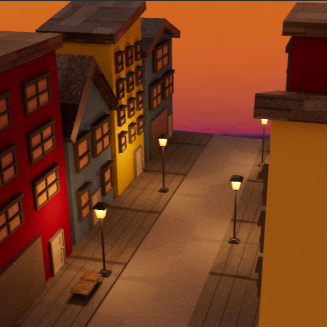

For my 3D animation class I was tasked with creating an environment scene in Maya to practice modeling with primitive shapes. As a big fan of the San Francisco scenery, I chose to recreate a San Francisco street. Because this was the first time I had ever touched Maya, I started off simple, using mainly cubes to create the buildings on my street. After getting used to the basics, I moved on to create more complicated structures like the lamps and windows.
I struggled a lot with rigging the lighting of the lamps and spent at least two weeks trying to figure out why the lamp lighting would show up in my scene in Maya, but not in my rendered images. After continually failing at making my lamp light up from the inside like I had originally envisioned, I chose to take a different approach and place point lights on the four faces of the lamp and crank up the exposure. Although it didn’t give me the desired effect I had wanted, this approach still provided some of the warm lighting I remember from my evenings spent in San Francisco.
This project not only taught me how to use Maya, but also how to be more flexible. My problems with the lamps allowed me to explore more of the lighting options I had in Maya. It also provided me with more experience in problem solving and finding alternative solutions to any obstacles I may face.